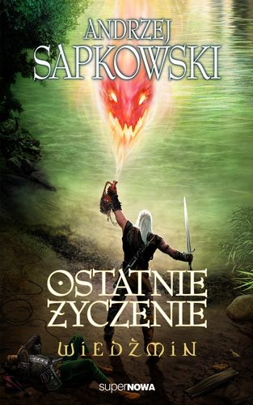
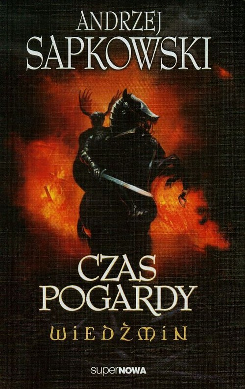

Ostatnie życzenie. Wiedźmin. Tom 1Autor: Andrzej Sapkowski

Główny bohater, Geralt z Rivii, jest wiedźminem, czyli osobą, która w zamian za wynagrodzenie, pozbywa się rozlicznych potworów.
Działa według ściśle określonego systemu moralnego, dzieląc wszystko na to, co dobre i na to, co złe, nie uznając natomiast niczego pośrodku.
Nie zabija, jeśli nie musi tego robić. Woli stawiać na uroki, które czasem też mogą rozwiązać problem. W trakcie swoich przygód poznaje piękną czarodziejkę,
Yennefer, która wzbudza w nim fascynację. Jakie zlecenia czekają na niego w najbliższej przyszłości?
Miecz przeznaczenia. Wiedźmin. Tom 2Autor: Andrzej Sapkowski
Wiedźmiński kodeks stawia tę sprawę w sposób jednoznaczny: wiedźminowi smoka zabijać się nie godzi.
To gatunek zagrożony wymarciem. Aczkolwiek w powszechnej opinii to gad najbardziej wredny. Na oszluzgi, widłogony i latawce kodeks polować przyzwala.
Ale na smoki – nie.
Wiedźmin Geralt przyłącza się jednak do zorganizowanej przez króla Niedamira wyprawy na smoka, który skrył się w jaskiniach Gór Pustulskich. Na swej drodze spotyka trubadura Jaskra oraz – jakżeby inaczej – czarodziejkę Yennefer. Wśród zaproszonych przez króla co sławniejszych smokobójców jest Eyck z Denesle, rycerz bez skazy i zmazy, Rębacze z Cinfrid i szóstka krasnoludów pod komendą Yarpena Zigrina. Motywacje są różne, ale cel jeden. Smok nie ma szans.
Wiedźmin. Tom 3. Krew elfówAutor: Andrzej Sapkowski
"Krew elfów" opowiada o losach Geralta - wiedźmina, który opiekuje się dzieckiem-niespodzianką. Tym dzieckiem jest dziewczynka o imieniu Ciri.
W prezentowanym tomie poznajemy też czarodziejkę Triss, która również ma wpływ na wychowanie dziecka. Autor powoli wprowadza czytelnika w nowy świat,
kreuje i daje poznać otaczającą bohaterów rzeczywistość. Fabuła książki rozgrywa się w świecie określanym przez samego autora jako quasi-średniowiecze.
Mamy więc tu nie tylko zwykłych ludzi, ale też mutantów, krasnoludów i elfów.
Wiedźmin. Tom 4. Czas pogardyAutor: Andrzej Sapkowski

"Czas pogardy" to czwarty tom sagi o Wiedźminie Geralcie. Nadchodzi zapowiadany wcześniej przez Intlinne czas miecza i topora. W tej części świat Ciri
i Wiedźmina ogarniają płomienie. Na powierzchnię zaczynają wyłazić złowieszcze szczury, uwielbiające czynić zło. Rozpoczynają atakować w sposób zdradziecki
i okrutny. Ludzie powoli tracą wszystko, co mieli. W konsekwencji - dla otaczającego ich świata i obcych osób mają już tylko tytułową pogardę. To także tom,
w którym Geralt po raz pierwszy zaczyna wchodzić w świat polityki.
Wiedźmin. Tom 5. Chrzest ogniaAutor: Andrzej Sapkowski
"Wiedźmin. Tom 5. Chrzest ognia" to kontynuacja losów tytułowego zabójcy wampirów, kikimor i innych stworzeń czyhających na ludzkie życia.
W tej części Geralt z Rivii wraz z Jaskrem nadal podąża tropem Ciri - magicznie uzdolnionej dziewczynki, z którą związany jest przeznaczeniem.
Opuszcza zamieszkany przez driady las Brokilon i tworzy nietypową grupę z osób skorych do udzielenia mu pomocy. Trafiają do niej łuczniczka Milva,
zdrajca Cahir oraz tajemniczy cyrulik Regis.
Tymczasem Nilfgard zrywa rozejm z Temerią. Maszerujące wojska skutecznie utrudniają wędrówkę wiedźmina, który wraz z towarzyszami zmuszony zostaje do zmiany trasy. Wojna ma także inne, daleko idące konsekwencje. Może doprowadzić do sojuszu czarodziejek, które nie zamierzają biernie przyglądać się wszystkim wydarzeniom. Wśród nich znajdzie się Yennefer z Vengerbergu - ukochana Geralta oraz przyszywana matka Ciri. Nastał trudny czas dla Geralta z Rivii, który być może po raz kolejny będzie musiał zapomnieć o swojej neutralności i opowiedzieć się po jednej ze stron.
Wiedźmin. Tom 6. Wieża jaskółkiAutor: Andrzej Sapkowski
Klęska jest nieunikniona. Świadczy o tym niemal wszystko i każda bardziej spostrzegawcza istota dostrzeże to bez problemu.
Przyczyną wydaje się jesienne Ekwinokcjum. Wszystko staje się coraz dziwniejsze i bardziej przerażające. Nadciąga niespodziewana zawierucha,
a Leiki śpiewają konajączkę. Ten sam sen nawiedza jednocześnie trzy różne osoby na terenie świątyni Melitele.
Tymczasem Ciri powoli dochodzi do siebie po niedawno odniesionych obrażeniach. Przebywa w chacie pustelnika Vysygoty. Na szczęście jej zdrowiu już nic nie zagraża. Kiedy przybrana córka Geralta dochodzi do wcześniejszej sprawności, postanawia przybliżyć gospodarzowi szczegóły swej podróży, łącznie z tym, w jaki sposób trafiła do miejsca, w którym obecnie się znajduje. Ciri nawet nie zdaje sobie sprawy z tego, że Geralt wciąż przetrząsa okolicę, by ją odnaleźć. Nie jest ON jednak jedyną osobą, która jej szuka. Na "łowy" wyrusza także cesarz Emhyr var Emreis, pragnie ON ją poślubić i zbliżyć się do tronu Cintry.
Pani Jeziora. Wiedźmin. Tom 7Autor: Andrzej Sapkowski
"Pani Jeziora" to siódmy już tom sagi o Wiedźminie. Sapkowski przenosi nas do królestwa Aen Elle, do którego dostaje się jedna z głównych bohaterek - Ciri.
Gdy jednak dowiaduje się, co czeka na nią w królestwie oraz czego oczekuje od niej Król Olch, dziewczyna postanawia uciec. W bezpiecznym opuszczeniu tego miejsca
pomagają jej... jednorożce.
W tym samym czasie śledzimy także losy głównego bohatera całej sagi - Wiedźmina Geralta, który zmuszony jest opuścić Caed Myrkvid. W końcu drogi Ciri i Geralta przecinają się, a akcja z każdą kolejną stroną nabiera tempa. Niewątpliwie Pani Jeziora to ponownie barwna, naszpikowana detalami historia, w której odnajdą się tylko ci, którzy pokuszą się o otwarcie pierwszej strony kolejnego tomu wiedźmińskiej sagi.